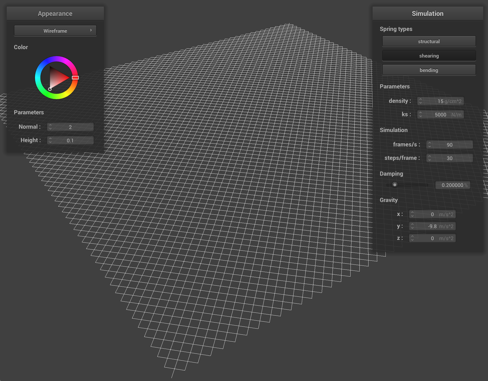
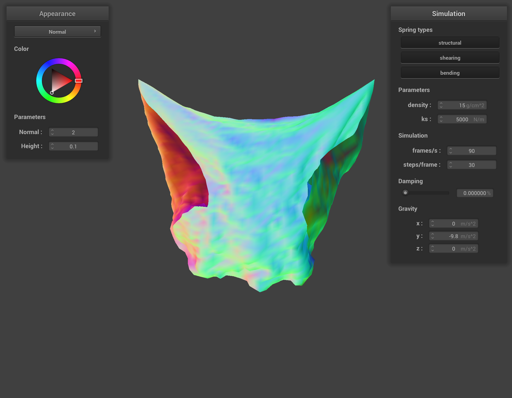
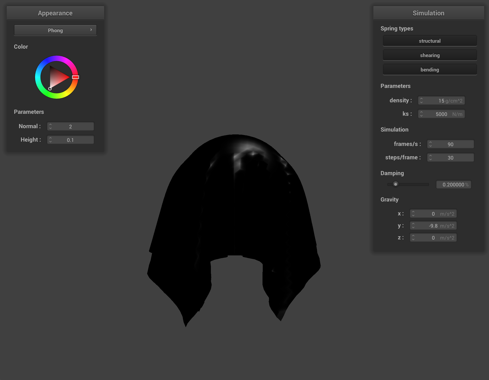

In this project, I implemented various aspects of a cloth simulator. To do this, I built a representation of a cloth using point masses held together by springs in different directions. Specifically, shearing, bending, and structural springs that function in different ways to model cloth movement dynamics. Then, I used simple physics principles in Verlet integration to aggregate force vectors on each point to use them to model how the cloth would move. At this point, I implemented two types of collisions: first one being with other objects and then collisions of the cloth with itself. Lastly, I worked on different types of shaders, from Diffuse Shading to Texturing and Mirroring.
Part 1: Masses and springs
Pinned Cloth:
Cloth Constraints:
Without Shearing

Only Shearing
With All Constraints
With All Constraints Close Up
Part 2: Simulation via numerical integration
Varying ks:
When I change the ks value to something really low, the cloth never "settles." Specifically, the spring constant being really low means the springs are less stiff and oscillate more in theory. What happens in our simulator is that, because we are limiting the length of extension, we get a cloth whose shape looks reasonable but doesn't actually converge to a given physical state. On the other hand, if we increase ks to higher values, this reduces, and the cloth becomes more stiff. If we increase it to really high values, then the cloth model "breaks" because the spring forces are too high. As you can see in the last image, the springs are strong enough to bring the point masses closer together and deform the cloth.
ks: 10
ks: 1000
ks: 10000
ks: 300000
Varying density:
For density, something similar happens. In some sense we know the correlation between the mass of the particles and spring constant, so increasing the density increases the mass per area which is similar to reducing the spring constant in that area. Additionally, if we decrease the density to 0.3g/cm^2, the spring constant now becomes relatively stronger and starts to pull parts of the cloth together. In short, there is a sweet spot for both ks and density parameters such that they accurately model the movement of the cloth.
Density: 0.3
Density: 100
Density: 1000
Density: 10000
Varying damping:
Damping changes the dissipation of energy in oscillations for springs, so increasing the damping makes the movements more lossy, therefore smoother and more slowly converging to a steady state. On the other hand, if we reduce damping to 0%, the cloth swings back and forth in a non-lossy fashion as shown in the snapshot image on the left. On the right, we can see that with higher damping values, the movement is more stiff, and hence the cloth still looks very smooth even in the still frame of its motion towards hanging straight down.

Damping: 0.0
Damping: 1.0
Cloth Resting Stage
Part 3: Handling collisions with other objects
Sphere Collision:
The sphere collide function checks whether a PointMass object is inside a sphere. If it is, it adjusts the position to resolve the collision. The function starts by computing the vector ray from the center of the sphere to the current position of the point mass. It then checks if the length of this vector is less than the sphere’s radius. This means the point is within the sphere so if a collision is detected, the function projects the point mass to the surface of the sphere along the direction of ray. It computes the tangent point on the sphere’s surface by scaling the unit vector of ray to the sphere’s radius and adding it to the origin. Then, it calculates a correction vector from the last position of the point mass to this tangent point and applies this correction, scaled by (1 - friction), to update the current position.
Plane Collision:
This plane collide function handles collisions between a PointMass and an infinite plane. It works by checking whether the point mass has crossed the plane between its last and current positions. To do this, it computes the signed distances (cur_dp and prev_dp) from the point mass’s current and previous positions to the plane, using the dot product with the plane’s normal. If these distances have opposite signs(negative product), the point mass has passed through the plane during the time step, indicating a collision. To resolve this, the function computes the direction of movement as a unit vector from the last position to the current one. It then calculates the exact point of intersection with the plane by solving the equation of the plane using a scalar t, which tells how far along the movement direction the intersection occurs. This intersection point is the tangent point on the plane’s surface. A small offset is added in the direction of the plane’s normal to prevent the point mass from getting stuck exactly on the surface. Finally, the function computes a correction vector from the last position to this offset tangent point and updates the current position by applying this correction, scaled by (1 - friction).
ks: 500
ks: 5000
ks: 50000
Cloth on Plane
We notice that as ks increases, the springs modeled the cloth's behavior get more stiff and the cloth doesn't behave in a very droopy fashion. For very low values of ks, the cloth is very reactive. For higher ones, the cloth is less affected by objects that prevent its motion. In other words, it behaves in a more rigid "stubborn" way.
Part 4: Handling self-collisions
To handle self-collisions in the cloth simulation, I first constructed a spatial map that divides the simulation space into discrete 3D boxes. Then, I loop through the point masses and assign them to a box based on their position. This spatial hashing significantly reduces the number of collision checks by limiting them to only nearby point masses. In the self_collide function, I calculate the hash for a point mass’s current position and get a list of all nearby point masses(based on the nearest self collision bin). For each nearby point mass, if it is not the same as the current one and is within a distance less than twice the thickness, I compute an adjustment vector to resolve the overlap. Finally, these adjustments are summed up and divided by the number of simulation steps, then added to the position vector.
Self Collision 1
Self Collision 2
Self Collision 3
Self Collision Final
I noticed that if we make ks really low, the springs have more bouncy tendencies, as described in the parts above. The cloth doesn't settle very quickly and when it does, it usually ends up settling in a flat state after signficiant jiggling. However, when we increase ks to something like 100000, the springs become more stiff and they're more likely to settle at their current position. Because of this, the cloth also settles faster. This is perhaps slightly more realistic because in the real world, cloth when dropped doesn't always return to a fully flat position. Obviously, this depends a lot on what type of material we're using and how much friction the surface has.
Varying ks = 10
Varying ks = 100000
Now when we vary density, we notice something similar. When density is really low, the springs have a greater effect on a smaller concentration of point masses so the cloth has a lower tendency to bounce around. When density is really high, there is more point mass resolution which results in each of the springs individually affecting the motion of the point masses more. In other words, there is a more exaggerated visual depiction of how the cloth might react to being dropped, but again that depends on what material you might be using. For example, something like cotton would come to rest almost immediately regardless of resting position, but perhaps something more rubbery would have a greater tendency to "unroll" and lay flat.
Varying density = 1
Varying density = 100000
Part 5: Shaders
A shader program is a small, specialized program that handles different stages of the graphics pipeline. It allows for fast and parallel computation, and is made up a vertex shader and a fragment shader. The vertex shader processes each vertex of a 3D model, transforming positions using matrices (like model, view, and projection) and passing along data like normals or texture coordinates. Then, the fragment shader kicks in to determine the color of each fragment based on lighting, materials, and other inputs.
Blinn Phong Shading Model:
The Blinn-Phong model has three main components. It breaks up realistic lighting into ambient, diffuse, and specular components. Ambient lighting consists of overall non-directional environment light. Diffuse consists of evenly scatterd light on the surface, and specular consists of a more reflection oriented light. Together, the sum of these three components represents the Blinn Phong shading model.
Ambient Lighting
Diffuse Lighting

Specular Lighting
All Lighting
Custom Texture: Claude Monet Impressionistic Painting
Bump and Displacement Comparison:
I used a gridded pattern as the texture; on the left is bump shading of the sphere and cloth with normal 100 and height 0.05. On the right is displacement shading, where I set the normal to 100 and height to 0.03. We can see the edges rise on the sphere, and that is shown as well when the cloth falls on top of the sphere.
Sphere Bump Shading
Sphere Displacement Shading
Cloth Bump Shading
Cloth Displacement Shading
Sphere Coarse/Fine-grained Comparison:
For bump shading, we see that increasing the sphere resolution doesn't have a huge effect. This is likely because everything is surface level. Fewer features are required to accurately show just a sphere, but when we want to vary the height of the vertex positions as we do in displacement shading, then resolution matters more because we can represent finer-grained changes in the sphere's texture. As we see below, bump shading looks roughly the same regardless of resolution, but displacement shading looks much better with higher resolution.
Bump Shading: -o 16 -a 16
Bump Shading: -o 128 -a 128
Displacement Shading: -o 16 -a 16
Displacement Shading: -o 128 -a 128
Mirror Shading:
Extra Credit: Custom Shader
For my custom shader, I made a shader that shows shadows in a more discrete fashion. The inspiration for this was many cartoons that are hand drawn in black and white. Shadows are draw through grid-like pencil strokes that portray darker shadows with lines closer together and lighter shadows with lines spaced farther apart. In this shader, I calculate the dot product of the normal and lighting vector, and partition it into 4 chunks:
if (intensity > 0.95) {
scale = 1.0;
} else if (intensity > 0.5) {
scale = 0.6;
} else if (intensity > 0.25) {
scale = 0.3;
} else {
scale = 0.1;
}
Finally, I mulitply the scale by the base color that we sample from the texture map. In the example below, I still use one of Claude Monet's impressionistic paintings.